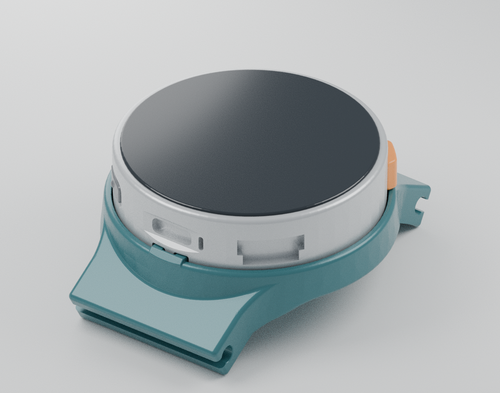
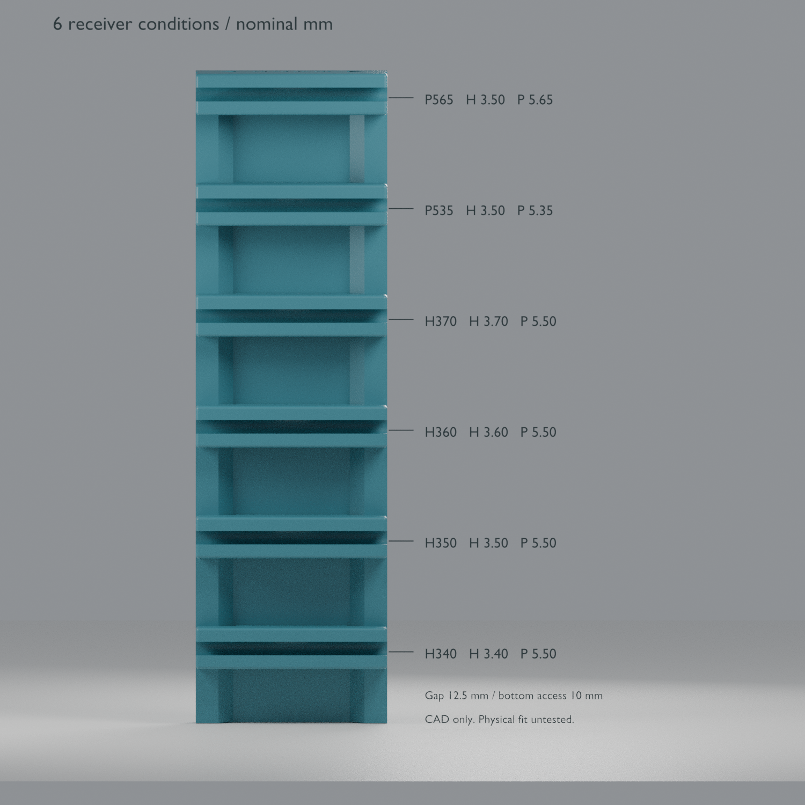
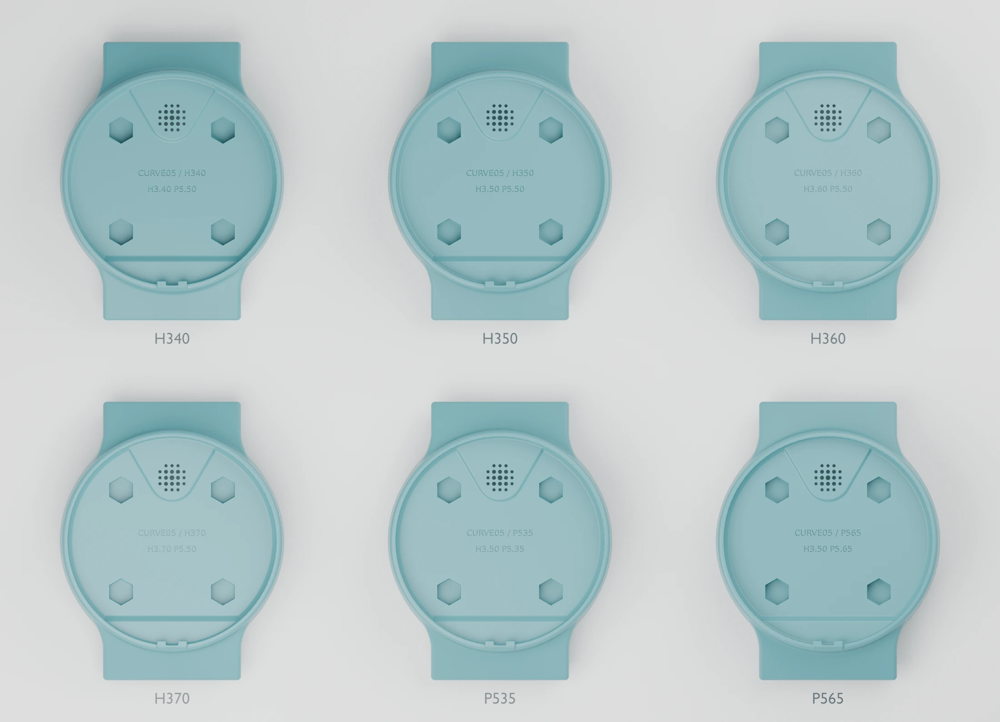
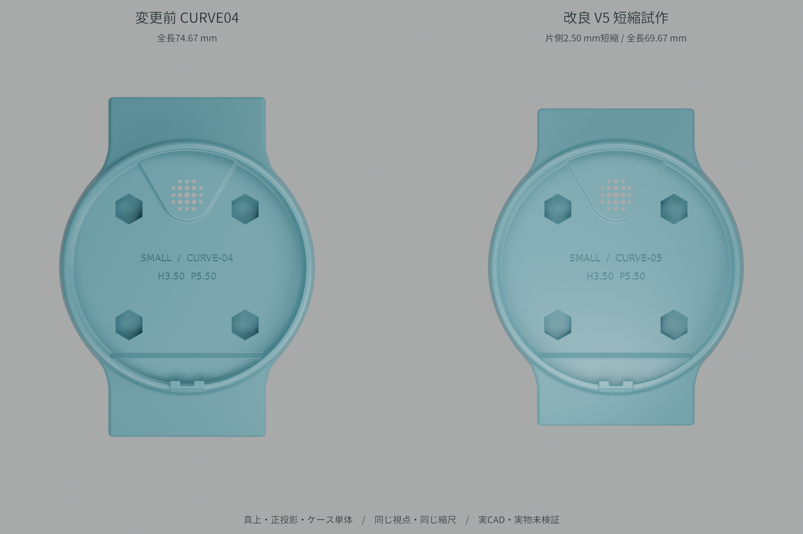

小さい側のApple Watchバンド向け
公開アダプターのSMALL側受け断面を参考にした設計です。全世代・全サイズ・全メーカーのバンドとの互換性を保証するものではありません。
時計のケースサイズ表記だけで適合を判断せず、使いたいバンドのコネクターを試験片で確認してください。大きい側のバンドは対象にしていません。
3D PRINTABLE WATCH CASE
試作モデル · 実物での適合確認が必要Apple Watchの小さい側のバンドを取り付けるための、M5Stopwatch用3Dプリントケースです。元ケースの時計取り付け部と腕に沿うカーブを残し、両端にスライド式のバンド受けを設けました。
時計本体・バンドは別途必要です。

BAND & CASE
公開アダプターのSMALL側受け断面を参考にした設計です。全世代・全サイズ・全メーカーのバンドとの互換性を保証するものではありません。
時計のケースサイズ表記だけで適合を判断せず、使いたいバンドのコネクターを試験片で確認してください。大きい側のバンドは対象にしていません。
バンドのコネクターを受けの溝に横から差し込み、バンド自身の中央ラッチで保持する構想です。解除は裏側の穴からラッチを直接押します。
独立した解除ボタンやばねはありません。押す位置・取り外し操作まで確認してから使い、無理に差し込まないでください。
GETTING STARTED
STLをmm・100%で読み込みます。PRINT_axisZはスライド溝の長手方向をプリンタのZ軸へ向けた候補姿勢です。スライサーで接地と支持を確認してください。
「入る」だけでなく、ガタ・中央ラッチの係止・裏穴からの解除まで確認。合った段に彫られた「H3.40 P5.50」などの数値を読み、下の対応表でケースIDを確認します。
対応する印刷用STLを1個選びます。6個全部を印刷する必要はありません。ケース単体でも挿入・解除・保持を再確認し、問題がなければ時計を取り付けます。
DOWNLOAD
STLの寸法単位はmm。
印刷姿勢版と標準版は同じ部品です。

まずはこれを1個。使用するバンドと造形条件に合う受け寸法を、ケースを丸ごと印刷する前に比較できます。
H340 / H350 / H360 / H370 / P535 / P565。各ケースにIDとH/P数値を刻印しています。合った条件のケースを1種類だけ選んでください。
試験ブロックには本体の局所30°回転がなく、既存試験片には本体のC0.15入口面取りがありません。試験片のみで最終本体の挿入感や保持強度は判断できません。試験片と同じH/P値でも、本体での再確認が必要です。
ブロックの数値刻印を読み、同じ行のファイルをZIPから選びます。HとPを別々の段から組み合わせないでください。Hは溝の全高、Pは中央ラッチ穴の左右幅です（mm）。
| ブロックの数値刻印 | ケースID | 印刷するファイル |
|---|---|---|
| H3.40 P5.50 | H340 | CURVE05_H340_print_axisZ.stl |
| H3.50 P5.50 | H350 | CURVE05_H350_print_axisZ.stl |
| H3.60 P5.50 | H360 | CURVE05_H360_print_axisZ.stl |
| H3.70 P5.50 | H370 | CURVE05_H370_print_axisZ.stl |
| H3.50 P5.35 | P535 | CURVE05_P535_print_axisZ.stl |
| H3.50 P5.65 | P565 | CURVE05_P565_print_axisZ.stl |
どの段にも合わない場合、近いIDを推測して使わず条件を見直してください。Hが大きいほど安全とは限りません。ケースの時計に隠れる面にもIDとH/P数値を刻印しています。

まとめて取得するZIPはGitHub Releasesで配布しています。各条件のSTL・STEPと生成ソースは6条件ケースZIPに同梱しています。
BEFORE YOU PRINT
6条件ケースは最終短縮版CURVE05を基準にしています。下記の単一条件ファイルは刻印変更前のH3.50 / P5.50参照版です。初めて印刷する場合は、上の6条件セットから選んでください。旧版資料は寸法や受け位置が異なるため、各セットの現行仕様を優先します。

元のM5Stopwatchケースを公開してくださったKawacciさん、バンド受け断面の参考アダプターを公開してくださったPk11さんに感謝します。
参考STLは単位情報がないためmmとして扱っています。Apple公式CAD曲線の取り込み・再配布は行っていません。本プロジェクトはAppleの公式製品ではありません。